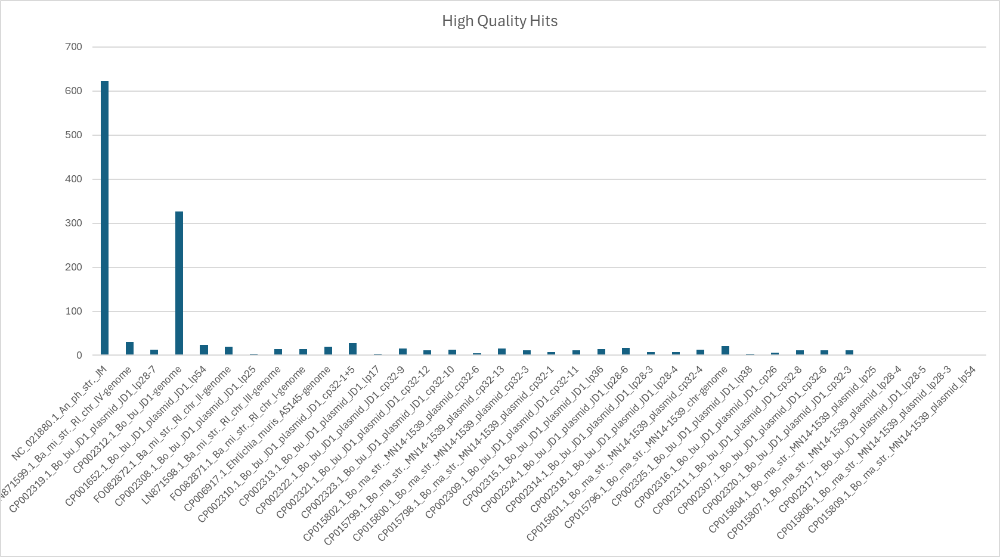
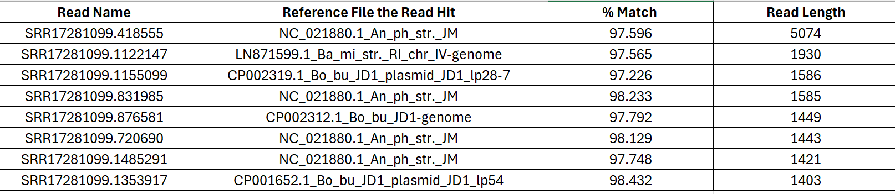
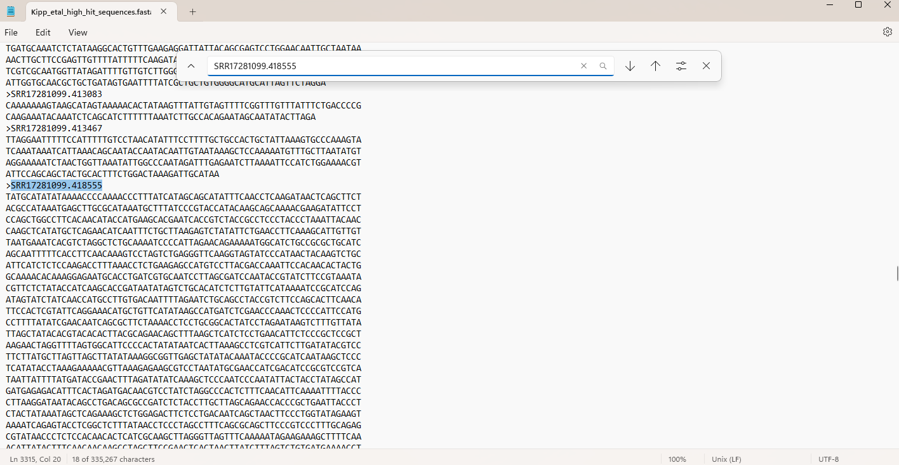
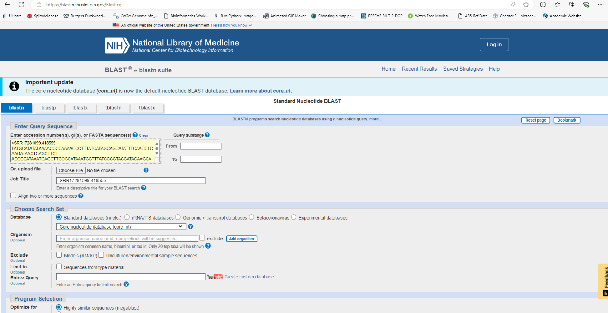
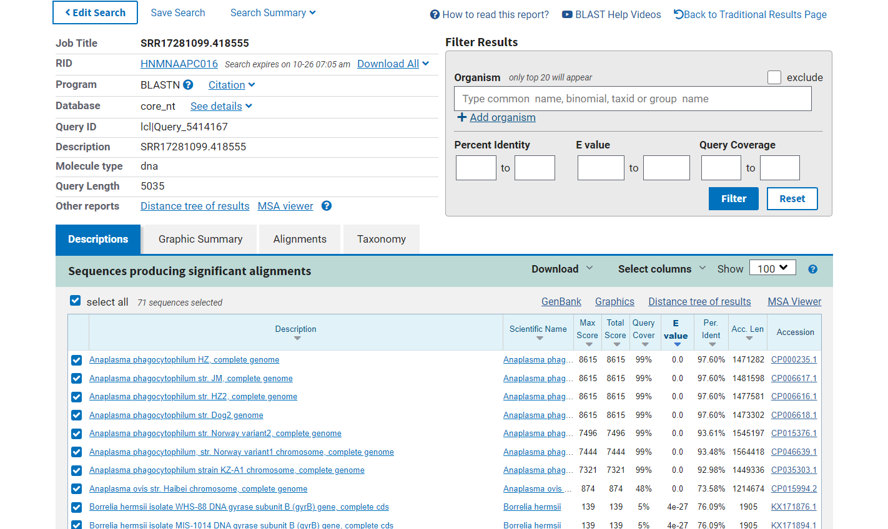
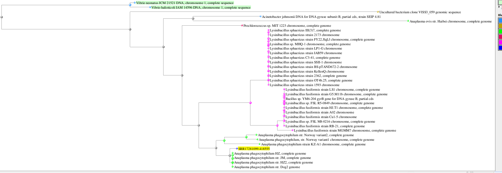

Nanopore workflow
Table of Contents
Molecular Procedures
Worked Example
The goal of this portion of the workshop is to practice the basic bioinformatic workflow required to process nanopore adaptive sampling sequence data. Specifically, we will map reads to reference sequences, filter out host sequences, and perform homology searches against known pathogen sequences. This workflow uses publicly available data published by Kipp et al. (2023).
Kipp et al. (2023) shows how NAS can be used to selectively sequence DNA from multiple bacterial tick-borne pathogens circulating in wild populations of the black-legged tick vector, Ixodes scapularis. They test the consistency of pathogen recovery using NAS enrichment and depletion methods, compared to more traditional Illumina metagenomic sequencing methods. NAS enrichment and depletion methods successfully recovered 4 bacterial tick-borne pathogens (Borellia burgdorferi; Borella miyamotoi; Anaplasma phagocytophilum; and Eherlichia muris) from 8 female I. scapularis ticks, and even resulted in the sequencing of the entire bacterial pathogen genomes. Importantly, their NAS results were consistent with Illumina 16S microbiome data.
For this exercise, we are only working with their depletion dataset, as that workflow is best aligned with the sequencing approach of this workshop. The goal of this process is to use NAS for real-time metagenomic surveillance, targeting pathogen detection in field-collected samples. This approach allows for selective sequencing of desired genomic regions. By performing these steps, we can efficiently map sequencing reads to reference genomes, filter out host sequences, and perform homology searches against known pathogen databases. This workflow mirrors the methodology described in Kipp et al. (2023), where nanopore sequencing was used to study tick-borne bacterial pathogens.
Before starting with Step 1: (1) install the Required Software. (2) make sure you have downloaded Kipp’s data as instructed in Getting Ready.
Step 1: Getting Started
In this step, we are using basic Linux commands to establish our file/folder structure. Mac and Linux users may open a terminal. Windows users should open their Ubuntu terminal via WSL.
Print your working directory (i.e., determine where your terminal window is located within the file structure of your computer):
pwd # type this command and hit enterHome directory for Windows users via Ubuntu should be:
\\wsl.localhost\Ubuntu\home\<USERNAME>\field_genomics\data_example # <USERNAME> was defined when installing Ubuntu
Make a directory (folder) for this workflow:
mkdir field_genomicsNavigate into that directory:
cd ~/field_genomics/Create a new subdirectory to store example data:
mkdir data_exampleCreate another subdirectory to store results:
mkdir output_exampleCreate a third subdirectory to store a BLAST database:
mkdir blast_databaseCreate a fourth subdirectory to summarize results from the example:
mkdir summary_exampleCopy or move the 3 data files from Getting Ready into the data_example/ directory. This can be done in a File Manager or Finder window via drag-and-drop or via the command line. Ensure that the files downloaded are named as follows, as sometimes downloading/extracting zip files from Google Drive can change file names:
-
Kipp_etal_depletion_reference.fasta -
SRR17281099.fasta.gz -
Kipp_etal_enrichment_reference.fastaExample code for transferring these files from your
Downloads/folder to thedata_example/folder:
cd Downloads/
mv SRR17281099.fasta.gz <YOUR_PATH>/field_genomics/
mv Kipp_etal_* <YOUR_PATH>/field_genomics/
Important: For Windows users, ensure that your computer does not suspend while running analyses. You need to repace <YOUR_PATH> with the output of your pwd command from above.
Step 2: Burrows-Wheeler Aligner (BWA)
Burrows-Wheeler Alignment (BWA) is a software package that is used to align reads to a reference genome. First, we must index the reference genome. Indexing a reference genome is a process that speeds up sequence alignment by creating a data structure, allowing rapid matching of DNA sequences (reads) to the reference genome. This is how to index a reference genome:
Variables:
- Reference Genome Path:
data_example/Kipp_etal_depletion_reference.fasta
Code:
bwa index data_example/Kipp_etal_depletion_reference.fastaDescription: What Does Indexing a Reference Genome Do?
-
Input: Reference Genome
- A FASTA file containing the reference genome sequences.
- Example:
>chr1 AGCTTAGCTAGCTACGATCGATCG >chr2 GCTAGCTAGCTAGCTGATCGTACG
-
Indexing with BWA
- BWA generates auxiliary files, such as suffix arrays or FM-indexes, that make the search process more efficient.
- These files allow the alignment tool to quickly locate where short DNA sequences (reads) map to the genome.
-
Search Using Indexed Genome
- When aligning reads, BWA uses the indexed reference genome to find matching sequences quickly.
- Example:
Input read:AGCTAGCTAC
Match found:chr1:5-14
Step 3: Align Nanopore Sequences to the Reference Genome
Variables:
- Reference Genome Path:
data_example/Kipp_etal_depletion_reference.fasta - Nanopore Sequences Path:
data_example/SRR17281099.fasta.gz - Output SAM File Path:
output_example/Kipp_etal_alig_depletion.sam
Code:
bwa mem -x ont2d data_example/Kipp_etal_depletion_reference.fasta data_example/SRR17281099.fasta.gz > output_example/Kipp_etal_alig_depletion.samDescription: This step aligns the Nanopore sequencing reads to the reference genome. BWA-MEM is the algorithm in BWA that is best for aligning long reads (70bp or more). SAM files (the output file format) are a type of text file format that contains the alignment information of various sequences that are mapped against reference sequences. These files can also contain unmapped sequences.

credit Galaxy
Step 4: Filter Out Host-Aligned Sequences
Description: samtools is a suite of programs used for interacting with high-throughput sequencing data. It consists of samtools, BCFtools, and HTSlib.
Variables:
- Input SAM File Path:
output_example/Kipp_etal_alig_depletion.sam - Output Unmapped Reads Path:
output_example/Kipp_etal_unmapped_depletion.fasta
Code:
samtools fasta -f 4 output_example/Kipp_etal_alig_depletion.sam > output_example/Kipp_etal_unmapped_depletion.fastaDescription: This command filters out the mapped reads, keeping only the unmapped sequences in a FASTA file. These sequences represent reads that are NOT the host (ex. bacterial DNA, fungal DNA, contamination).
Step 5: BLAST
Variables:
- BLAST Database Path:
blast_database/Kipp_etal_enrichment_reference.fasta
Code:
Create BLAST Database:
makeblastdb -in data_example/Kipp_etal_enrichment_reference.fasta -parse_seqids -blastdb_version 5 -title "Kipp_etal_enrichment" -dbtype nucl -out blast_database/Kipp_etal_enrichment_referenceDescription: This creates a BLAST database from the enrichment reference genome. The end goal is to identify non-host reads that match to a pathogen from a database we are creating in this step.
Run BLAST Query:
blastn -query output_example/Kipp_etal_unmapped_depletion.fasta -db blast_database/Kipp_etal_enrichment_reference -out output_example/Kipp_etal_blast_results.txtDescription: This step performs a BLAST search to compare the unmapped sequences against the BLAST database, producing a text file that gives us reads that matched to a pathogen databse.
To make it easier to summarize blast results, another BLAST query can be run, this time, defining a different type of output -outfmt 6. The following command outputs a tab-delimited file that allows filtering results a little easier.
blastn -query output_example/Kipp_etal_unmapped_depletion.fasta -db blastdb/Kipp_etal_enrichment_reference -out output_example/Kipp_etal_blast_results_table.txt -outfmt 6
#Options supplied to -outfmt (out format) can be customized to include alignment length, percent identity, etc.
Step 6: Summarizing result
Filtering sequence headers and query subjects based on high percentage matches
The following command filters the table-formated BLAST output to keep only the information for hits with a matching percentage >97%:
awk -F'\t' '$3 > 97' output_example/Kipp_etal_blast_results_table.txt > summary_example/Kipp_etal_high_hits.txt
The next step is to get a list of …
cut -f1 summary_example/Kipp_etal_high_hits.txt | sort | uniq > summary_example/Kipp_etal_high_hit_headers.txt
cut -f2 summary_example/Kipp_etal_high_hits.txt | sort | uniq > summary_example/Kipp_etal_high_hit_subjects.txt
Separating sequences with high percentage matching
Initial steps to list the headers of sequences needed:
zcat data_example/SRR17281099.fasta.gz > data_example/SRR17281099.fasta
samtools faidx data_example/SRR17281099.fasta
headers=`cat summary_example/Kipp_etal_high_hit_headers.txt`
Obtaining the subset of high perecentage matching sequences from the whole set of sequences.
samtools faidx data_example/SRR17281099.fasta $headers > summary_example/Kipp_etal_high_hit_sequences.fasta
Exploring results on NCBI-BLAST (online)
Here is a graph of the amount of hits per window. Clearly, one reference file is dominating, that being NC_021880.1_An_ph_str._JM
Here is a snip of the data generated in Kipp_etal_blast_results_table.txt in Excel. It has been filtered for % Match above 97% and sorted by desencding read length. You can see that the longest high-quality hit was for the same reference as above, NC_021880.1_An_ph_str._JM.
Now, if we want to find that sequence, we can copy the Read name of the file, SRR17281099.418555, and use Ctrl + F on the Kipp_etal_high_hit_sequences.fasta to find the sequence of our read of interest:
Once we have this read of interest, we can use NCBI BLAST to investigate of all uploaded nucleotide sequences, where does this one fall?
First, we paste out sequence into the nucleotide box: 
After searching, a results pane will show you results similar to what we had on the command line, but in a different format.
NCBI has a neat feature where you can view how your sequence (highlighted in yellow) compares to other uploaded sequences:
In this case, we can see that our longest read maps near-perfectly to a portion of an Anaplasma phagocytophilum reference genome, a Gram-negative bacterium that causes multiple diseases in cattle and sheep, as well as zoonoses like human granulocytic anaplasmosis.
Real-Time Example
Description:
This section contains all of the code we will use to analyze the Nanopore sequence data generated during the workshop. This is not part of the worked example.
1. Basecalling
Description: Basecalling is the process of determining the sequence of nucleotide bases from the raw data generated by the sequencer. For Nanopore sequencing, basecalling involves interpreting changes in electral current as single-stranded DNA (or RNA) passes through the nanopore. Current fluctuations correspond to different nucleotide bases which are decoded into A’s, G’s, T’s, and C’s by the dorado basecalling software.
#!/bin/bash
# Base directory for pod5 files
base_dir="/Library/MinKNOW/data/Ecuador_Workshop_Training_Pathogens_Pero/no_sample/20240913_1820_MN40667_FAY96875_60fc85db/pod5_pass"
# Output directory for basecalling results
output_dir="/Users/mammalogy/Ecuador_Workshop/dorado-0.7.3-linux-x64/bin/01_sup_out/"
#dorado path
dorado="/Users/mammalogy/Documents/software/dorado-0.7.0-osx-arm64/bin/dorado"
# Loop through each barcode directory
for barcode in barcode{01..24}
# this loops over files named barcode01, barcode02, ..., barcode24
# The number of barcode files will depend on the number of individuals multiplexed and being analyzed simultaneously
do
$dorado basecaller dna_r10.4.1_e8.2_400bps_fast@v5.0.0 "$base_dir/$barcode/" > "$output_dir/${barcode}.bam"
doneNames of Dorado models (i.e., here we use dna_r10.4.1_e8.2_400bps_fast@5.0.0) are systematically structured, each segment corresponding to a different aspect of the model. Below is a breakdown of the model we used:
Analyte Type (dna): This denotes the type of analyte being sequenced. For DNA sequencing, it is represented as dna. If you are using a Direct RNA Sequencing Kit, this will be rna002 or rna004, depending on the kit.
Pore Type (r10.4.1): This section corresponds to the type of flow cell used. For instance, FLO-MIN114/FLO-FLG114 is indicated by r10.4.1, while FLO-MIN106D/FLO-FLG001 is signified by r9.4.1.
Chemistry Type (e8.2): This represents the chemistry type, which corresponds to the kit used for sequencing. For example, Kit 14 chemistry is denoted by e8.2 and Kit 10 or Kit 9 are denoted by e8.
Translocation Speed (400bps): This parameter, selected at the run setup in MinKNOW, refers to the speed of translocation. Prior to starting your run, a prompt will ask if you prefer to run at 260 bps or 400 bps. The former yields more accurate results but provides less data. As of MinKNOW version 23.04, the 260 bps option has been deprecated.
Model Type (hac): This represents the size of the model, where larger models yield more accurate basecalls but take more time. The three types of models are fast, hac, and sup. The fast model is the quickest, sup is the most accurate, and hac provides a balance between speed and accuracy. For most users, the hac model is recommended.
Model Version Number (v5.0.0): This denotes the version of the model. Model updates are regularly released, and higher version numbers typically signify greater accuracy. For more details on decoding dorado model names see here.
2. Aligning BAM Files to a Reference Genome
This step aligns the Nanopore sequencing reads to the reference genome. BAM files contain the same information as a SAM file, but in binary format which is not human readable. BAM files are generally smaller, however, and are therefore more efficient for software to work with. Alignment data is almost always stored as a BAM file and most software that analyzes aligned reads expects a BAM file as input.
#!/bin/bash
# Path to the reference genome
REFERENCE_PATH="/Library/MinKNOW/data/References/Ecusdor_ref/pema_only_09092024.fasta"
# Base directory for input BAM files
INPUT_DIR="/Users/mammalogy/Ecuador_Workshop/01_sup_out"
# Output directory for aligned BAM files
OUTPUT_DIR="/Users/mammalogy/Ecuador_Workshop/02_align_out"
# Loop over barcode01.bam to barcode24.bam
for i in $(seq -w 1 10); do
# Define input and output file names
INPUT_BAM="${INPUT_DIR}/barcode${i}.bam"
OUTPUT_BAM="${OUTPUT_DIR}/barcode${i}_aligned.bam"
# Run dorado aligner
echo "Aligning ${INPUT_BAM}..."
dorado aligner $REFERENCE_PATH $INPUT_BAM > $OUTPUT_BAM
echo "Finished aligning barcode${i}.bam"
done3. Extracting Unaligned Reads
Next, we extract the unaligned reads from the BAM files using samtools. This step is crucial for isolating reads that did not align to the reference genome, allowing us to focus on non-host sequences.
#!/bin/bash
# Path to samtools (ensure samtools is installed and accessible in your PATH)
SAMTOOLS_PATH="/opt/homebrew/bin/samtools"
# Base directory for input BAM files (update this to the correct directory)
INPUT_DIR="/Users/mammalogy/Ecuador_Workshop/02_align_out"
# Output directory for unaligned BAM files
OUTPUT_DIR="/Users/mammalogy/Ecuador_Workshop/03_unmapped_out"
# Loop over barcode01.bam to barcode24.bam
for i in $(seq -w 1 24); do
# Define input and output file names
INPUT_BAM="${INPUT_DIR}/barcode${i}_aligned.bam"
OUTPUT_BAM="${OUTPUT_DIR}/barcode${i}_unaligned.bam"
# Extract unaligned reads using samtools
echo "Extracting unaligned reads from ${INPUT_BAM}..."
$SAMTOOLS_PATH view -b -f 4 $INPUT_BAM > $OUTPUT_BAM
echo "Finished extracting unaligned reads for barcode${i}.bam"
done4. Renaming Sequence IDs Before Database Creation
Before creating the BLAST database, we rename the sequence IDs in the FASTA file to ensure uniqueness and compatibility. This step is essential for maintaining consistency in downstream analyses.
Download 03.5_shorten_fasta_header.sh
#!/bin/bash
awk '
BEGIN {FS=" "; OFS=" "}
/^>/ {
id=substr($1, 2, 40); # Get the first 40 characters of the ID
count[id]++; # Count occurrences of this ID
if (count[id] > 1) { # If the ID is a duplicate, add a suffix
id=id "_" count[id];
}
print ">" id; # Print the modified ID
next;
}
{print}' /Users/mammalogy/Ecuador_Workshop/Pathogen_Ref/bvbrc_nsamer_good_comp_noplant_veupathbd_allbut_vecthost_pathogen_genomes_04092024.fasta > /Users/mammalogy/Ecuador_Workshop/Pathogen_Ref/shortened_unique_ids.fasta5. Creating a BLAST Database
With the sequence IDs renamed, we now create a BLAST database from the reference FASTA file. This database will be used for identifying the unaligned sequences.
Download 04_blast_db_creation.sh
#!/bin/bash
# Make the database
makeblastdb -in /Users/mammalogy/Ecuador_Workshop/Pathogen_Ref/shortened_unique_ids.fasta -dbtype nucl -out /Users/mammalogy/Ecuador_Workshop/Pathogen_Ref/bvbrc_pathogen_db -title "Pathogen Genomes DB" -parse_seqids
# Print success message
echo "BLAST database created successfully: $DB_NAME"6. Converting BAM to FASTA
Before running BLAST, we need to convert the unaligned BAM files into FASTA format. This step prepares the sequences for the BLAST search.
Download 05_convert_bam_to_fasta.sh
#!/bin/bash
# Load samtools (if needed)
# module load samtools
# Set paths
BAM_DIR="/Users/mammalogy/Ecuador_Workshop/03_unmapped_out"
FASTA_DIR="/Users/mammalogy/Ecuador_Workshop/03_unmapped_fasta_out"
DB_NAME="/Users/mammalogy/Ecuador_Workshop/Pathogen_Ref/bvbrc_pathogen_db"
# Create output directory for FASTA files if it doesn't exist
mkdir -p $FASTA_DIR
# Convert BAM files to FASTA
for BAM_FILE in $BAM_DIR/*.bam; do
BASENAME=$(basename $BAM_FILE .bam)
samtools fasta $BAM_FILE > $FASTA_DIR/${BASENAME}.fasta
echo "Converted $BAM_FILE to FASTA format"
done7. Running BLAST on FASTA Files
The converted FASTA files are then subjected to BLAST search against the created database to identify possible pathogenic sequences.
#!/bin/bash
# Set paths
FASTA_DIR="/Users/mammalogy/Ecuador_Workshop/03_unmapped_fasta_out"
DB_NAME="/Users/mammalogy/Ecuador_Workshop/Pathogen_Ref/bvbrc_pathogen_db"
OUTPUT_DIR="/Users/mammalogy/Ecuador_Workshop/03_blastn_results"
# Create output directory for BLAST results if it doesn't exist
mkdir -p $OUTPUT_DIR
# Run BLAST for each FASTA file
for FASTA_FILE in $FASTA_DIR/*.fasta; do
BASENAME=$(basename $FASTA_FILE .fasta)
blastn -query $FASTA_FILE -db $DB_NAME -out $OUTPUT_DIR/${BASENAME}_blastn.txt -outfmt 6 -num_threads 16
echo "BLAST completed for $FASTA_FILE"
done8. Renaming Sequence IDs in BLAST Results
Finally, the sequence IDs in the BLAST output are renamed to match their original identifiers, providing clear traceability of the sequences.
#!/bin/bash
# Define directories and files
RESULTS_DIR="/Users/mammalogy/Ecuador_Workshop/03_blastn_results"
MAPPING_FILE="/Users/mammalogy/Ecuador_Workshop/seq_id_mapping.txt"
OUTPUT_DIR="/Users/mammalogy/Ecuador_Workshop/03_blastn_results_with_original_ids"
# Create output directory if it doesn't exist
mkdir -p $OUTPUT_DIR
# Loop through each BLAST result file from barcode01 to barcode24
for i in $(seq -f "%02g" 1 24); do
INPUT_FILE="$RESULTS_DIR/barcode${i}_unaligned_blastn.txt"
OUTPUT_FILE="$OUTPUT_DIR/barcode${i}_unaligned_blastn_with_original_ids.txt"
# Replace seq_X IDs with original IDs using awk
awk 'NR==FNR {map[$1]=$2; next} $2 in map {$2=map[$2]}1' $MAPPING_FILE $INPUT_FILE > $OUTPUT_FILE
echo "Processed $INPUT_FILE -> $OUTPUT_FILE"
done